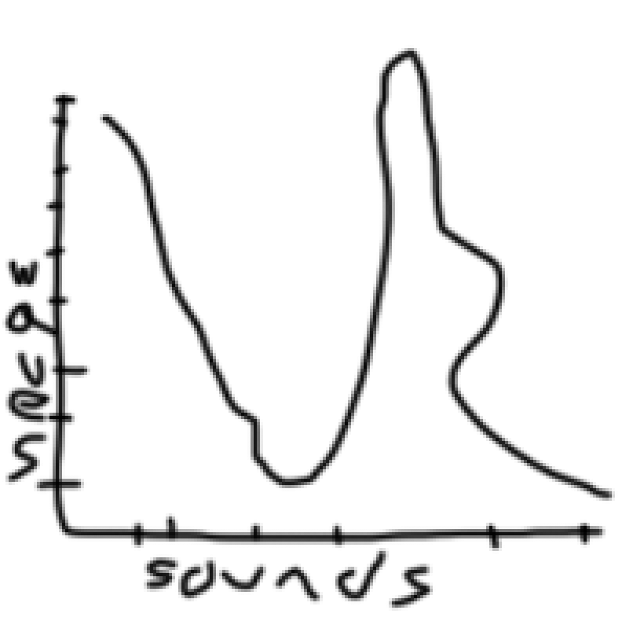

DEAN'S
as a leading advocate of dungeons i am very big on world building so i am happy to announce my new world and book series it does
NOT have a name yet but i would like to hear feedback so please do send me everything you think is good about this idea
it starts with the map. the earth is named Porle and it is traingle based geometry with 4 continents includedd
early drafts for the forge room included multiple spaces for soundspace but i finally had to settle on less in order to preserve wavelength (demonstrated below)
final design of forge room with space for 5 ssoundlengths per diameter
the third side of porle includes a ticket booth for most entryways into the islanD
if anyone has lots of money i am looking for hiring outside development teams to code my world to real life scale. resumeés necesary forjob approval and i will love to pay for dental insurance but want be able to
here is examples of where in it will look like final